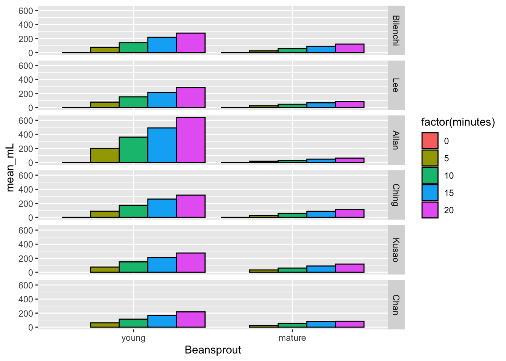
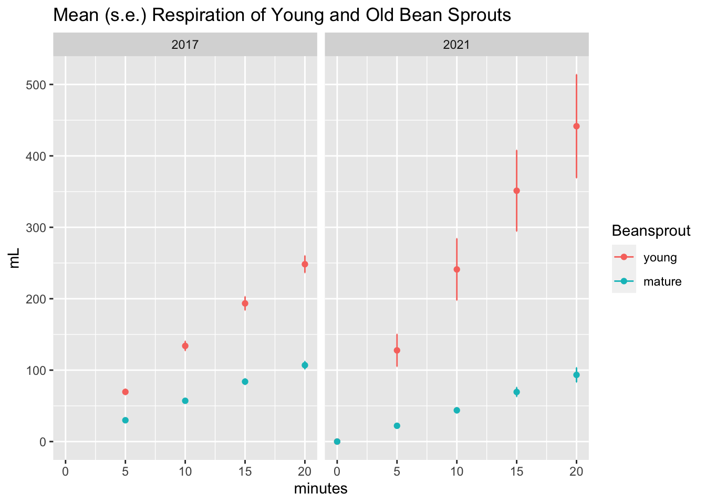
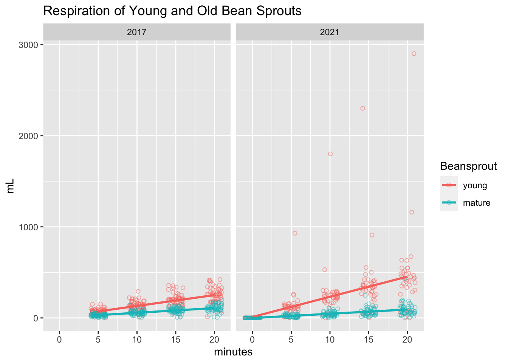

Four years ago, my wife’s Biology class did a bean sprout respiration lab and she asked me to plot the data for her. Or maybe I just saw her data and decided I wanted to play with it. Anyway, they do this lab every year and this year I thought I would go back and look at the data again.
library(tidyverse)## ── Attaching packages ────────────────────────────── tidyverse 1.3.0 ──## ✓ ggplot2 3.3.2 ✓ purrr 0.3.4
## ✓ tibble 3.0.3 ✓ dplyr 1.0.2
## ✓ tidyr 1.1.2 ✓ stringr 1.4.0
## ✓ readr 1.3.1 ✓ forcats 0.5.0## ── Conflicts ───────────────────────────────── tidyverse_conflicts() ──
## x dplyr::filter() masks stats::filter()
## x dplyr::lag() masks stats::lag()resp <- read_csv("../datasets/respiration21.csv",
col_types = "iffffddddd")Wide data must come long. Last time I did this there were gather and spread functions. Those have been deprecated for the use of pivot_longer. For whatever reason, it did not like the way I specified the variables, but the result was as expected anyway.
resp <- resp %>% pivot_longer(
cols = 6:10,
names_to = "minutes",
values_to = "mL")
resp$minutes <- recode(resp$minutes, "min0" = 0, "min5" = 5, "min10" = 10,
"min15" = 15, "min20" = 20)
resp## # A tibble: 1,370 x 7
## Year Teacher Period Table Beansprout minutes mL
## <int> <fct> <fct> <fct> <fct> <dbl> <dbl>
## 1 2021 Bilenchi 1 A young 0 0
## 2 2021 Bilenchi 1 A young 5 15
## 3 2021 Bilenchi 1 A young 10 30
## 4 2021 Bilenchi 1 A young 15 44.5
## 5 2021 Bilenchi 1 A young 20 69.5
## 6 2021 Bilenchi 1 B young 0 0
## 7 2021 Bilenchi 1 B young 5 130
## 8 2021 Bilenchi 1 B young 10 240
## 9 2021 Bilenchi 1 B young 15 410
## 10 2021 Bilenchi 1 B young 20 490
## # … with 1,360 more rowsHere’s the data for drawing the plot, subgrouped by teacher, bean sprout, and time. More error messages that don’t affect what I wanted.
resp_plot <-
resp %>% group_by(Teacher, Beansprout, minutes) %>%
summarize(mean_mL = mean(mL, na.rm = T), sd_mL = sd(mL, na.rm = T))## `summarise()` regrouping output by 'Teacher', 'Beansprout' (override with `.groups` argument)resp_plot## # A tibble: 60 x 5
## # Groups: Teacher, Beansprout [12]
## Teacher Beansprout minutes mean_mL sd_mL
## <fct> <fct> <dbl> <dbl> <dbl>
## 1 Bilenchi young 0 0 0
## 2 Bilenchi young 5 75.8 57.1
## 3 Bilenchi young 10 141. 99.0
## 4 Bilenchi young 15 219. 156.
## 5 Bilenchi young 20 278. 194.
## 6 Bilenchi mature 0 0 0
## 7 Bilenchi mature 5 25.2 14.0
## 8 Bilenchi mature 10 58.1 27.7
## 9 Bilenchi mature 15 90.2 38.5
## 10 Bilenchi mature 20 122. 49.8
## # … with 50 more rowsHere’s the plot. Mostly what would be expected although the Bilenchi beansprouts did not mature as well as the others.
ggplot(resp_plot,
aes(x = Beansprout, y = mean_mL, fill = factor(minutes))) +
geom_bar(stat = "identity", position = position_dodge(), color = "black") +
facet_grid(Teacher ~ .)## Warning: Removed 4 rows containing missing values (geom_bar).
Each teacher-beansprout combo did not have enough data to make a nice plot with error bars, but the combination of all the groups did.
total_plot <- resp %>% group_by(Beansprout, minutes, Year) %>%
summarize(mean_mL = mean(mL, na.rm = T),
se_mL = sd(mL, na.rm = T)/sqrt(sum(!is.na(mL))))## `summarise()` regrouping output by 'Beansprout', 'minutes' (override with `.groups` argument)Here’s the final plot!
pd <- position_dodge(0)
ggplot(total_plot, aes(x=minutes, y = mean_mL, color = Beansprout)) +
geom_errorbar(aes(ymin=mean_mL-se_mL, ymax=mean_mL+se_mL),
width=.1, position=pd) +
geom_point(position=pd) +
ylab("mL") +
ggtitle("Mean (s.e.) Respiration of Young and Old Bean Sprouts") +
expand_limits(x = 0, y = 0) + # to show the origin
facet_grid(. ~ Year)## Warning: Removed 2 rows containing missing values (geom_point).
Ah, it was a similar (but not identical) result as last time. Looks like either the sprouts were fresher or maybe they used more.
I replicated the jittered scatter plot from last time and, uh oh, looks like there were some major outliers! Even without those outliers though, it does seem like there were higher respiration numbers in the young sprouts this time around.
ggplot(resp, aes(x=minutes, y=mL, color=Beansprout)) +
geom_point(shape = 1, alpha = .5, position=position_jitter(width=1,height=0)) +
geom_smooth(method=lm, # Add linear regression lines
se=FALSE) +
ggtitle("Respiration of Young and Old Bean Sprouts") +
facet_grid(. ~ Year)## `geom_smooth()` using formula 'y ~ x'## Warning: Removed 482 rows containing non-finite values (stat_smooth).## Warning: Removed 482 rows containing missing values (geom_point).